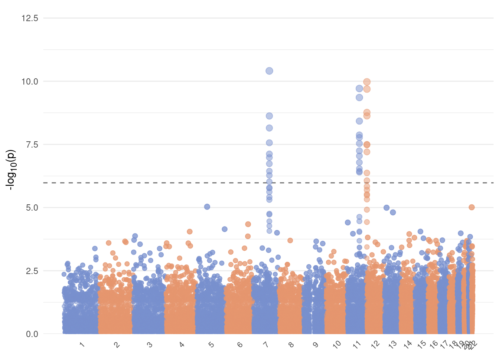
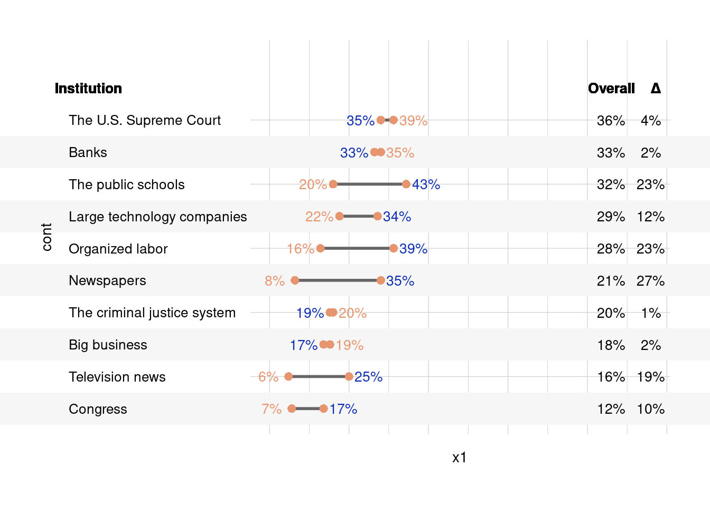

7 基础统计绘图
这一小节的内容将会持续更新，详情请关注更新日志。
7.1 曼哈顿图
曼哈顿图是一种常用的GWAS结果可视化方法，它通过将每个SNP的p值转换为负对数尺度，并在x轴上表示SNP的位置，在y轴上表示p值，从而直观地展示GWAS结果。在图中，显著的结果（p值较小）会显示为高亮的点，而未显著的结果则显示为较暗的点。曼哈顿图可以帮助研究者快速识别出显著关联的SNP，并进一步分析其功能。
7.1.1 加载R包
7.1.2 构建GWAS数据
simulateGWAS函数模拟基因组关联研究 (GWAS) 数据, 其中有100,000个单核苷酸多态性 (SNPs) 和3个显著列。
然后，使用 janitor::clean_names() 来标准化数据框的列名。
gwas_data_load <- simulateGWAS(nSNPs = 1e5, nSigCols = 3) |>
janitor::clean_names()GENERATING SIMULATED GWAS DATASET
1. Generating random rs IDs
2. Generate list of N per SNP
3. Generating BETA
4. Generating SE
5. Generating R^2
6. Generating T-values
7. Generating P-values
8. Adding significant column in chromosome 7
9. Adding significant column in chromosome 11
10. Adding significant column in chromosome 12
DONE!head(gwas_data_load) chr snp bp nmiss beta se r2 t
1 1 rs4155881 1047370 19887 2.752251e-02 0.14289315 7.430252e-05 0.7015206
2 1 rs85543416 1777933 19935 6.040930e-04 0.15108781 7.775624e-05 -1.9623204
3 1 rs77801213 190664 19971 1.132082e-02 0.10271452 6.850765e-05 2.1165481
4 1 rs38497793 911150 19823 3.538911e-05 0.04758727 5.140509e-05 -0.2382061
5 1 rs63825472 698313 19846 2.157670e-03 0.11934574 3.316109e-05 -0.7903913
6 1 rs40354549 1479083 20019 2.699845e-03 0.11095280 8.600896e-05 0.5175790
p
1 0.53251259
2 0.37050198
3 0.46389358
4 0.06730728
5 0.13124653
6 0.05740168从模拟的GWAS数据中选择所有 p 值小于 0.05 的行，这些行代表统计上显著的结果。
模拟的GWAS数据中选择所有 p 值大于或等于 0.05 的行，这些行代表非显著的结果。
然后按染色体（chr）对这些非显著结果进行分组。
对每个染色体组抽取20%的样本，进行数据降采样。
将显著和非显著的数据行合并回一个单一的数据框中。
sig_data <- gwas_data_load |> subset(p < 0.05)
notsig_data <- gwas_data_load |>
subset(p >= 0.05) |>
group_by(chr) |>
sample_frac(0.2)
gwas_data <- bind_rows(sig_data, notsig_data)对合并后的数据按染色体分组，并计算每个染色体组的最大基对位置（max_bp）。
使用 cumsum 函数计算每个染色体组的累积最大基对位置，并通过lag函数将这些值错位，以便于后续的累积位置计算。
lag函数会将数据框或向量中的每一行向前移动指定的位置，并返回移动后的值。
选择染色体和累积基对位置的错位值（bp_add）
data_cum <- gwas_data |>
group_by(chr) |>
summarise(max_bp = max(bp)) |>
mutate(bp_add = lag(cumsum(max_bp), default = 0)) |>
select(chr, bp_add)
head(data_cum)# A tibble: 6 × 2
chr bp_add
<int> <dbl>
1 1 0
2 2 2197321
3 3 4295847
4 4 6295480
5 5 8193938
6 6 9993804将累积基对位置数据与原始GWAS数据合并。
计算每个SNP的累积基对位置（bp_cum），这有助于后续的可视化或分析。
gwas_data <- gwas_data |>
inner_join(data_cum, by = "chr") |>
mutate(bp_cum = bp + bp_add)对每个染色体分组的数据计算累积基对位置的平均值，用于确定每个染色体在后续图表的中心位置。
找出具有最小 p 值的行，计算其对数变换后的 p 值，并确定y轴的极限 (ylim) ，以便于在图表中突出显示最显著的结果。
计算Bonferroni校正后的显著性阈值。这是通过将0.05除以GWAS数据中的行数（即测试的总数）来实现的，用于调整多重比较的影响。
7.1.3 绘制曼哈顿图
ggplot(gwas_data, aes(
x = bp_cum, y = -log10(p),
color = as_factor(chr), size = -log10(p)
)) +
# x轴为累积基对位置(bp_cum)，y轴为负对数p值(-log10(p))，颜色和大小由染色体(chr)和p值决定。
geom_hline(
yintercept = -log10(sig),
color = "grey40", linetype = "dashed"
) +
# 添加一条水平虚线，表示经过Bonferroni校正的显著性阈值。
geom_point(alpha = 0.5) + # 添加散点图的点，透明度设置为0.5。
scale_x_continuous(
label = axis_set$chr,
breaks = axis_set$center
) +
# 设置x轴的刻度标签和断点，使其对应于染色体的中心位置
scale_y_continuous(expand = c(0, 0), limits = c(0, ylim)) + # 设置y轴的范围和扩展。
scale_color_manual(values = rep(
c("#788FCE", "#E6956F"),
unique(length(axis_set$chr))
)) +
# 手动设置颜色，为每个染色体分配不同的颜色。
scale_size_continuous(range = c(0.5, 3)) + # 设置点的大小范围。
labs(x = NULL, y = "-log<sub>10</sub>(p)") + # 设置图形的标签，x轴标签为空，y轴标签为负对数p值。
theme_minimal() +
theme(
legend.position = "none",
panel.grid.major.x = element_blank(),
panel.grid.minor.x = element_blank(),
axis.title.y = element_markdown(),
axis.text.x = element_text(angle = 45, size = 8, vjust = 0.5)
)
7.2 分裂小提琴图
7.2.1 加载R包
7.2.2 加载数据
df1 <- read_tsv("data/F1ag.txt") |>
select(2, 3, -1) |>
separate(`Treatment`, into = c("A", "B"), sep = "-", convert = TRUE) |>
mutate(
B = str_replace_all(B, "[0-9]", ""),
A = as.factor(A)
)Rows: 96 Columns: 4
── Column specification ────────────────────────────────────────────────────────
Delimiter: "\t"
chr (1): Treatment
dbl (3): Sample time, SOC (g kg-1), DOC(mg kg-1)
ℹ Use `spec()` to retrieve the full column specification for this data.
ℹ Specify the column types or set `show_col_types = FALSE` to quiet this message.df2 <- read_tsv("data/F1ag.txt") %>%
select(2, 4, -1) |>
separate(`Treatment`, into = c("A", "B"), sep = "-", convert = TRUE) |>
mutate(
B = str_replace_all(B, "[0-9]", ""),
A = as.factor(A)
)Rows: 96 Columns: 4
── Column specification ────────────────────────────────────────────────────────
Delimiter: "\t"
chr (1): Treatment
dbl (3): Sample time, SOC (g kg-1), DOC(mg kg-1)
ℹ Use `spec()` to retrieve the full column specification for this data.
ℹ Specify the column types or set `show_col_types = FALSE` to quiet this message.df3 <- read_tsv("data/F1BC.txt") |>
select(2, 3, -1) |>
separate(`Treatment`, into = c("A", "B"), sep = "-", convert = TRUE) |>
mutate(
B = str_replace_all(B, "[0-9]", ""),
A = as.factor(A)
)Rows: 24 Columns: 4
── Column specification ────────────────────────────────────────────────────────
Delimiter: "\t"
chr (1): Treatment
dbl (3): Sample time, Soil temperate (℃), Soil moisture (%)
ℹ Use `spec()` to retrieve the full column specification for this data.
ℹ Specify the column types or set `show_col_types = FALSE` to quiet this message.7.2.3 画图
# theme_cus <- function(...) {
# theme_cus <- theme(
# axis.text.x = element_text(
# angle = 0, hjust = 0.5, vjust = 0.5, colour = "black",
# size = 10, margin = margin(b = 2)
# ),
# axis.text.y = element_text(
# color = "black", size = 10,
# margin = margin(r = 1)
# ),
# panel.background = element_rect(fill = NA, color = NA),
# panel.grid.minor = element_line(linewidth = 0.2, color = "#e5e5e5"),
# panel.grid.major = element_line(linewidth = 0.2, color = "#e5e5e5"),
# panel.border = element_rect(
# fill = NA, color = "black",
# linewidth = 1, linetype = "solid"
# ),
# legend.key = element_blank(),
# legend.title = element_blank(),
# legend.text = element_text(color = "black", size = 8),
# legend.spacing.x = unit(0.1, "cm"),
# legend.key.width = unit(0.5, "cm"),
# legend.key.height = unit(0.5, "cm"),
# legend.justification = c(1, 0),
# legend.background = element_blank(),
# ...
# )
# return(theme_cus)
# }
# a <- ggplot(df1, aes(x = A, y = `SOC (g kg-1)`, fill = B)) +
# geom_split_violin(trim = FALSE, color = NA) +
# guides(fill = guide_legend(title = "group")) +
# stat_summary(
# fun.data = "mean_sd", position = position_dodge(0.15),
# geom = "errorbar", width = 0.1
# ) +
# stat_summary(
# fun = mean, geom = "point",
# position = position_dodge(0.15), show.legend = FALSE
# ) +
# stat_compare_means(aes(group = B),
# label = "p.signif", label.y = 15.1,
# method = "t.test", size = 5
# ) +
# scale_fill_manual(values = c("#788FCE", "#e6956f")) +
# labs(x = NULL, y = "SOC (g kg-1)") +
# theme_cus(legend.position = c(1, 0))
# g <- ggplot(df2, aes(x = A, y = `DOC(mg kg-1)`, fill = B)) +
# geom_split_violin(trim = F, color = NA, adjust = 1.5) +
# guides(fill = guide_legend(title = "group")) +
# stat_summary(
# fun.data = "mean_sd",
# position = position_dodge(0.15), geom = "errorbar", width = .1
# ) +
# stat_summary(
# fun = "mean", geom = "point",
# position = position_dodge(0.15), show.legend = F
# ) +
# stat_compare_means(aes(group = B),
# label = "p.signif",
# label.y = 210, method = "t.test", size = 5
# ) +
# scale_fill_manual(values = c("#788FCE", "#E6956F")) +
# labs(x = NULL, y = "DOC(mg kg-1)") +
# theme_cus(legend.position = "non")
# b <- ggplot(df3, aes(x = A, y = `Soil temperate (℃)`, fill = B)) +
# geom_split_violin(trim = F, color = NA, adjust = 1.5) +
# guides(fill = guide_legend(title = "group")) +
# stat_summary(
# fun.data = "mean_sd", position = position_dodge(0.15),
# geom = "errorbar", width = .1
# ) +
# stat_summary(
# fun = "mean", geom = "point",
# position = position_dodge(0.15), show.legend = F
# ) +
# stat_compare_means(aes(group = B),
# label = "p.signif",
# label.y = 17.1, method = "t.test", size = 5
# ) +
# scale_fill_manual(values = c("#788FCE", "#E6956F")) +
# labs(x = NULL, y = "Soil temperate") +
# theme_cus(legend.position = "non")
# a + b + g + plot_annotation(tag_levels = "A")7.3 阴影条带哑铃图
7.3.1 加载R包
7.3.2 数据处理
df <- read_csv("data/values.csv")Rows: 16 Columns: 4
── Column specification ────────────────────────────────────────────────────────
Delimiter: ","
chr (1): Institution
dbl (3): Overall, Republicans/Leaners, Democrats/Leaners
ℹ Use `spec()` to retrieve the full column specification for this data.
ℹ Specify the column types or set `show_col_types = FALSE` to quiet this message.df <- df |>
mutate(across(2:4, ~ .x / 100)) |>
arrange(Overall) |>
mutate(
order = row_number(), # 添加一个新列order，包含每行的行号
Institution = fct_reorder(Institution, order)
) |> # 根据order列的值重新排序Institution列
rename(cont = 1, overall = 2, x1 = 3, x2 = 4) |>
mutate(
diff = abs(x2 - x1),
x1pr = percent(x1, accuracy = 1),
x2pr = percent(x2, accuracy = 1),
dipr = percent(diff, accuracy = 1),
ovpr = percent(overall, accuracy = 1),
x1nu = if_else(x1 > x2, 1, if_else(x1 < x2, -1, -1)) / 16,
x2nu = -1 * x1nu
)
df2 <- df |>
filter(row_number() %% 2 == 0) |> # 从df中筛选出行号为偶数的行
mutate(xmin = -2, xmax = 2)
df <- left_join(df, df2, by = colnames(df)) |>
head(10)7.3.3 定义主题
txt_sz <- 3.5
theme_cus <- theme(
text = element_text(size = 14),
panel.background = element_blank(),
axis.text.y = element_text(
color = "black", hjust = 0,
size = 14 / 5 * txt_sz
),
axis.text.x = element_blank(),
axis.ticks.x = element_blank(),
axis.title = element_blank(),
axis.ticks.y = element_blank(),
panel.grid = element_blank(),
panel.border = element_blank(),
legend.position = "none",
plot.title = element_text(size = rel(0.8), hjust = -1),
plot.margin = unit(c(1, 1, 1, 1), "cm")
)7.3.4 数据可视化
txt.sz <- 3.5
ggplot(df, aes(y = cont)) +
geom_rect(aes(
xmin = xmin, xmax = xmax,
# xmin,xmax有缺失值，只绘制没有缺失值的
ymin = as.numeric(cont) - 1.5,
ymax = as.numeric(cont) - 0.5
# xmin - (required) left edge of rectangle
# xmax - (required) right edge of rectangle
# ymin - (required) bottom edge of rectangle
# ymax - (required) top edge of rectangle
), fill = "#f6f6f6") + # 添加矩形图层，用于背景标记，颜色为浅灰色
geom_text(
label = "Institution", x = -0.675, y = dim(df)[1] + 1,
size = txt.sz, color = "black", fontface = 2, hjust = 0
) + # 添加文本标签"Institution"
geom_text(
label = "Overall", x = 1.075, y = dim(df)[1] + 1,
size = txt.sz, color = "black", fontface = 2
) + # 添加文本标签"Overall" +
geom_text(
label = "\u0394", x = 1.2, y = dim(df)[1] + 1,
size = txt_sz, color = "black", fontface = 2, hjust = 0
) +
geom_text(aes(x = x1, label = x1pr),
size = txt_sz, color = "#e6956f",
nudge_x = df$x1nu
) +
geom_text(aes(x = x2, label = x2pr),
size = txt.sz,
color = "#112fb3", nudge_x = df$x2nu
) + # 在x2位置添加文本，显示x2的百分比值
geom_text(aes(x = x1 * 0 + 1.075, label = ovpr),
size = txt.sz,
color = "black"
) + # 在固定位置添加文本，显示overall的百分比值
geom_text(aes(x = x1 * 0 + 1.2, label = dipr),
size = txt.sz,
color = "black"
) + # 在固定位置添加文本，显示差异的百分比值
geom_segment(aes(x = x1, xend = x2, yend = cont),
color = "gray40", size = 1
) + # 添加线段，连接x1和x2点
geom_point(aes(x = x1),
shape = 16, size = 2.5,
color = "#E6956F"
) + # 在x1位置添加点
geom_point(aes(x = x2),
shape = 16, size = 2.5,
color = "#E6956F"
) + # 在x2位置添加点
scale_y_discrete(expand = c(0, 0)) + # 设置y轴为离散值并调整扩展
scale_x_continuous() + # 设置x轴为连续值
coord_cartesian(
ylim = c(0.2, 12.5),
xlim = c(0, 1.2), clip = "off"
) + # 设置坐标轴范围和裁剪行为
theme_cus # 应用自定义主题Warning: Using `size` aesthetic for lines was deprecated in ggplot2 3.4.0.
ℹ Please use `linewidth` instead.Warning: Removed 5 rows containing missing values (`geom_rect()`).